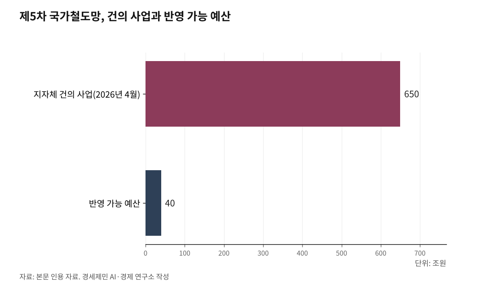

[127년 한국철도⑯] 코레일·SR·철도공단, 독일식 지주회사로 묶어 다시 짠다
분화가 곧 통합이다
속도·값·시간·노선을 수요에 맞춰 나눈다
코레일·SR·철도공단을 독일식 지주회사로 묶는다
국산 기술로 밖에 나가고, 철도 자체를 녹색으로 바꾼다
인하대 해양AI융합센터 김갑봉 연구교수(물류학)│1899년 제물포에서 첫 기적이 울린 지 127년이 됐다. 그동안 한국 철도는 길이로 자랐지만, 그 골격은 아직 선진국의 절반에 그친다. 그래서 6000km로 늘려 다시 그리자는 말이 나온다. 그러나 답은 더 넓게가 아니라 더 영리하게다. 길이를 늘리기 전에, 가진 길을 수요에 맞게 나누는 일이 먼저다.

1. 줄곧 나눴다
한국 철도는 오래 한 방향으로만 자랐다. 수송은 도로에 쏠렸고, 노선은 서울을 중심으로 방사형으로 뻗었다. 속도는 빠른 고속과 느린 일반으로 갈려 그 사이가 비었고, 요금은 14년간 한 번도 오르지 않아 적자만 쌓였다. 화물은 도로에 밀려 철도 몫이 톤 기준 1.3%(2023년)까지 주저앉았다.
재설계의 답은 나눔이었다. 속도를 고속·준고속·일반으로 나누고, 14년 묶인 요금을 속도와 시간에 따라 갈랐다. 서울로만 모이던 방사형 망을 지방끼리 잇는 다중심으로 폈고, 사람과 짐을 선로와 시간으로 나눴다. 국내 화물과 대륙 화물을 갈랐고, 하늘길과 땅길도 수요로 나눴다.
원리는 한결같다. 모두가 고속일 필요는 없다. 속도와 용도에 맞게 철도를 나누면, 같은 돈으로 더 넓은 망을 깐다.
그 뿌리에는 밀도의 경제가 있다. 철도는 선로와 신호, 역에 드는 고정비가 크다. 한 노선에 열차와 승객이 많이 몰릴수록 그 고정비를 더 많은 이용자가 나눠 져, 한 명을 더 실어 나르는 비용이 낮아진다. 흩어진 수요를 두꺼운 축에 모으는 일, 그것이 나눔의 반대편에 놓인 통합의 근거다.

2. 나누면 넓어진다
나눔은 쪼개기가 아니라 살림이다. 제5차 국가철도망 구축계획을 앞두고 전국 지자체가 건의한 사업은 약 650조원(2026년 4월 기준)으로, 반영 가능한 예산 40조원의 16배에 이른다. 모두에게 고속을 줄 수는 없다. 수요가 두꺼운 축에 고속을 몰고 얇은 축에 알맞은 속도를 주는 방식, 곧 노선마다 등급을 매기는 선로등급제라야 40조원으로 더 넓은 망을 깐다.
값도 그렇다. 빠른 열차에 제값을 매기고 느린 무궁화호를 싸게 남기면, 운임을 한꺼번에 올리지 않고도 재정과 형평을 함께 손본다. 사람을 고속선으로 옮기면 일반선에 화물이 들어설 틈이 난다. 나눌수록 길은 넓어진다.
3. 그리고 통합한다
나누기만 하면 흩어진다. 그래서 통합이 따른다. 마침 그 통합이 눈앞에서 벌어지고 있다. 따로 표를 팔던 KTX와 SRT가 한 회사로 묶인다. 2026년 7월 14일 두 기관의 회원 통합이 시작됐고, 8월 통합 앱을 거쳐 9월 운행 열차부터 한 창구에서 예매한다.
통합은 표 파는 창구에 그치지 않는다. 두 회사로 갈렸던 고속철도가 한 망으로 움직이면, 겹치던 차량과 정비를 함께 굴려 밀도를 살린다. 선로를 짓고 관리하는 국가철도공단과 열차를 굴리는 코레일로 갈라진 책임도 정리해야 한다.
통합의 손길은 화물과 대륙에도 닿는다. 항만과 산업단지에 끊긴 인입선을 이어 도로로 샌 짐을 철도로 다시 모으고, 막힌 북녘 대신 열차를 실은 채 바다를 건너는 열차페리로 대륙과 잇는다. 서울에서 멈춘 인천공항 철길을 국내와 대륙으로 이으면, 한 도시의 공항이 나라 전체의 관문이 된다. 분화와 통합은 모순이 아니다. 나눌 것을 나누고 모을 것을 모으는, 한 설계의 두 손이다.
4. K철도 재설계, 일곱 제언
일곱 가지로 간추린다. 첫째, 속도를 나눈다. 수요에 맞춰 노선마다 고속·준고속·일반을 배정하는 선로등급제로 40조원 예산을 지키는 길이다. 둘째, 값을 나눈다. 속도와 시간으로 요금을 차등해 현실화하되, 무궁화호 같은 서민의 발은 줄이지 말고 늘려 선택권을 지킨다. 셋째, 화물을 되살린다. 톤 기준 1.3%(2023년)로 경제협력개발기구(OECD) 꼴찌인 철도 화물을 항만·산업단지 인입선과 열차페리로 끌어올린다.
넷째, 지주회사부터 세운다. 선로를 두 개 깔면 낭비라 한 사업자가 도맡는 자연독점이 22조원 부채(2025년 전망)의 뿌리다. 독일은 지주회사 도이체반 아래 선로를 관리하는 인프라 회사와 열차를 굴리는 운영 회사를 자회사로 두는 통합형 상하분리로 이를 풀었고, 프랑스와 이탈리아가 뒤따랐다. 코레일과 SR을 하나로 합치는 데 그치지 말고, 선로를 짓는 국가철도공단까지 한 지주회사로 묶으면 책임과 고정비가 분명해진다. 다섯째, 옥석을 가린다. 공항이든 해저철도든, 수요에 맞지 않으면 접는다.
여섯째, 기술의 속을 채운다. 고속열차와 신호를 국산화한 힘은 크지만, 세계 철도차량 시장에서 한국의 몫은 2%뿐이고 완성차는 흑자여도 부품은 적자다. 완성차의 겉이 아니라 부품의 속을 채워야 한다. 일곱째, 녹색화는 상징이 아니라 셈으로 한다. 역사 지붕을 다 덮어도 자가 태양광은 코레일 수요의 6분의 1이라, 밖에서 재생에너지를 사 오는 조달 제도부터 갖춰야 독일철도의 71.5%에 다가선다.
관통하는 원리는 하나다. 속도는 목적이 아니라 수단이다. 빠를수록 좋은 것이 아니라 수요에 맞을수록 좋다.
5. 다시 그린다
1899년 제물포에서 첫 기적이 울린 지 127년. 그동안 한국 철도는 길이로 자랐다. 이제는 설계로 자랄 때다. 다시 그릴 그림은 더 긴 골격이 아니라 더 영리한 골격이다.
모두에게 고속을 약속하는 대신, 저마다의 속도에 맞는 철도를 약속하는 것. 나눌 것을 나누고 모을 것을 모으는 것. 그렇게 다시 그린 철도를 밖으로 내보내고, 스스로 녹색으로 바꾸는 것. 그것이 127년 철도가 다음 100년에 답할 길이다.
※ 이 기사는 AI 프로그램 클로드를 활용해 작성했습니다.
참고문헌
· "코레일-SRT, 철도 회원 통합 시작…9월 운행 열차부터 통합 예매", 아시아경제, 2026.7.13., https://www.asiae.co.kr/article/2026071317101264795
· "코레일 부채 22조원…전기료 140% 오르는 동안 운임은 동결", 농민신문, 2025.2.18., https://www.nongmin.com/article/20250218500274
· "DB InfraGO", 도이체반(Deutsche Bahn), https://ir.deutschebahn.com/en/db-group/business-units/db-infrago/
· "현대로템, 우즈벡에 K-고속철 사상 첫 수출", 현대로템, 2024.6.14., https://www.hyundai-rotem.co.kr/ko/company/press/details.do?seq=2206
· "코레일, 2050년 RE100 달성 도전, 태양광·E트레인 시동", 전기신문, 2026.5.11., https://www.electimes.com/news/articleView.html?idxno=367869
· "수송량 및 수송분담률", e-나라지표(국가지표체계), https://www.index.go.kr/unity/potal/main/EachDtlPageDetail.do?idx_cd=1245
· "철도통계연보", 한국철도공사, https://www.korail.com/
#한국철도127년 #K철도재설계 #분화와통합 #선로등급제 #요금현실화 #철도화물 #상하분리 #K철도수출 #녹색철도 #철도정책